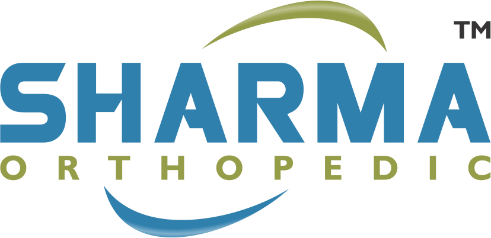
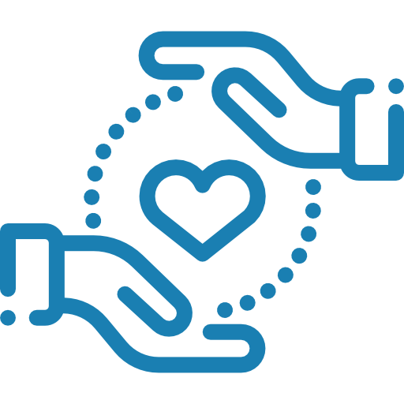
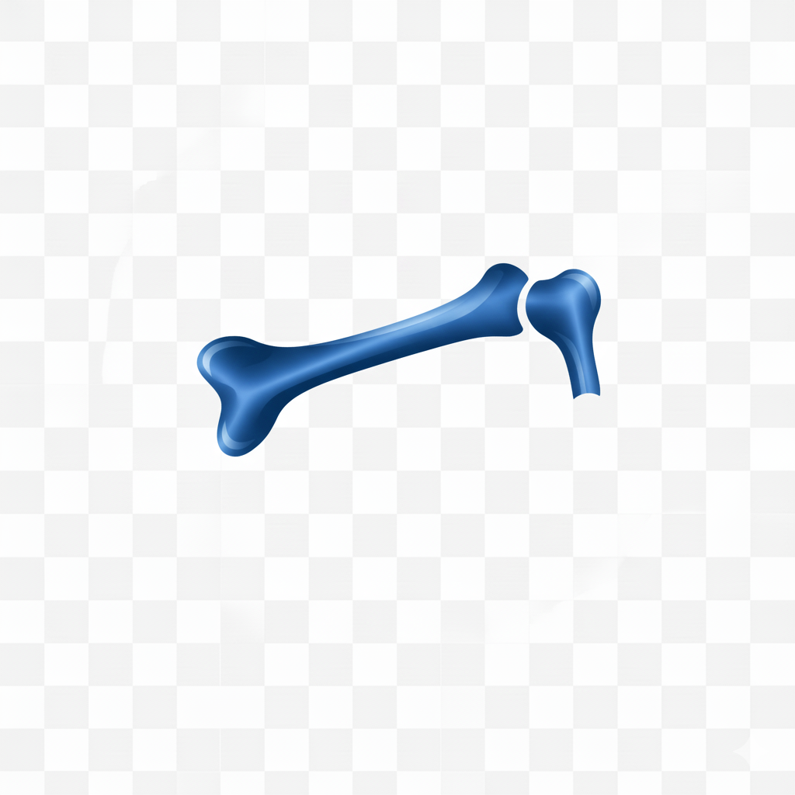
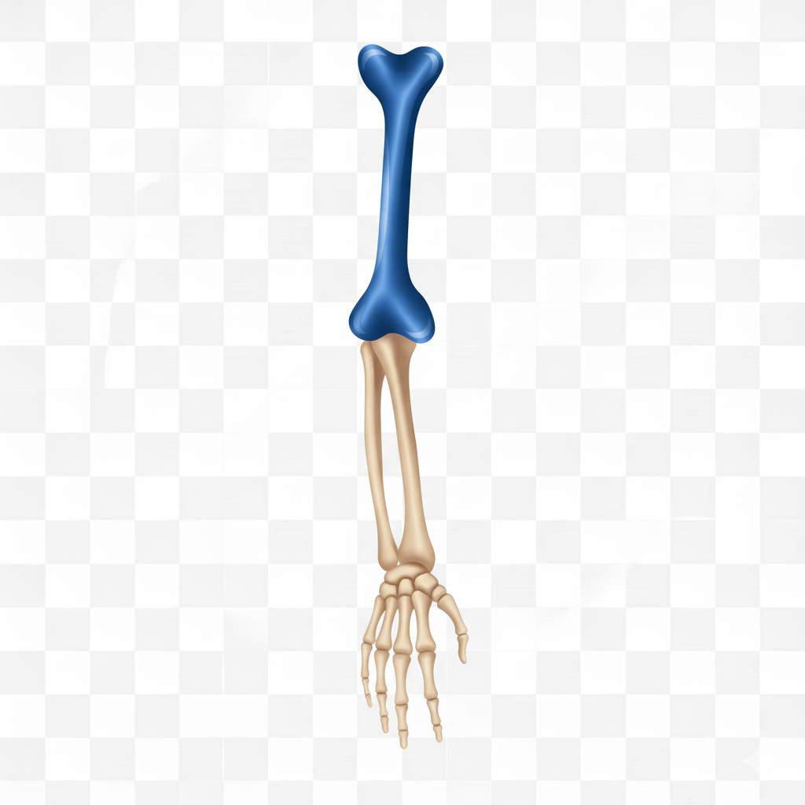
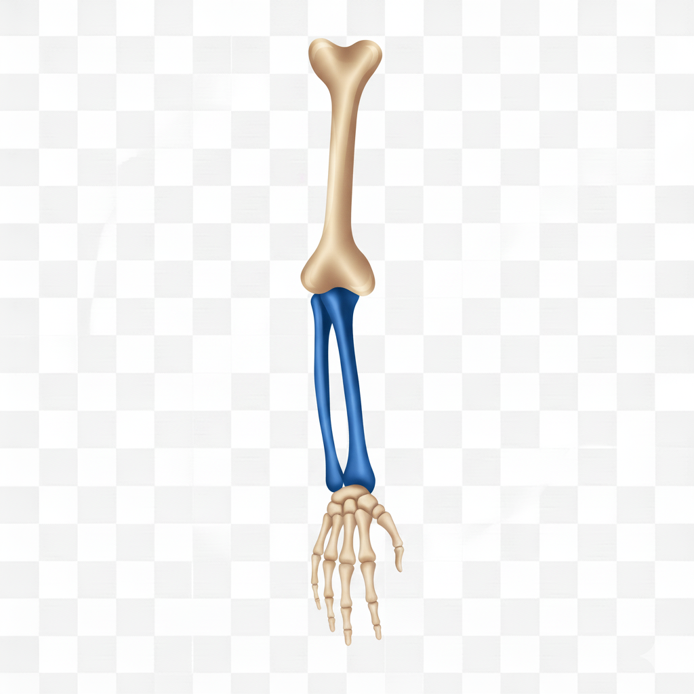

Productos certificados para especialistas médicos

SEITRA único distribuidor oficial en el SUR-OCCIDENTE de SHARMA
Productos traumatológicos y ortopedicos certificados.
Instrumental de alto estándar

Asesoría especializada
Distribución rápida

Respaldados por especialistas

Clavícula

Húmero

Radio/Cubito

Pelvis

Cadera

Fémur

Rodilla

Tibia/Fíbula

Mano
SEITRA es una empresa especializada en la distribución de instrumental traumatológico y ortopédico, ofreciendo soluciones médicas certificadas para profesionales de la salud.
Trabajamos con productos de alta calidad diseñados para garantizar precisión, seguridad y confianza en cada procedimiento médico.
Nuestro compromiso es brindar innovación, respaldo técnico y atención personalizada para hospitales, clínicas y especialistas.